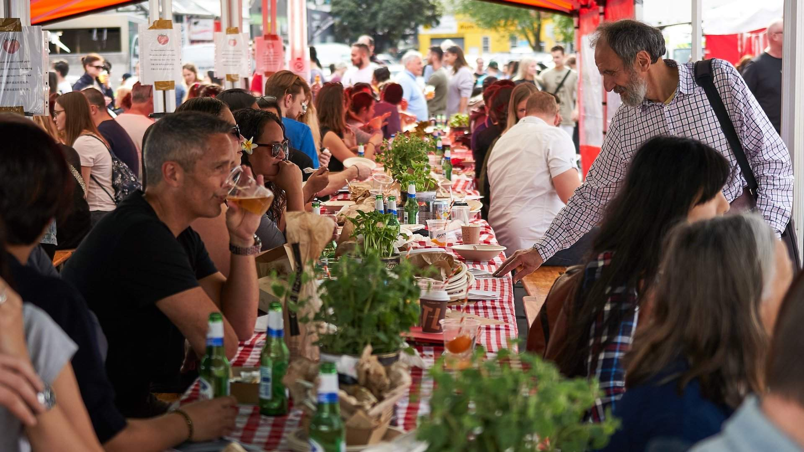
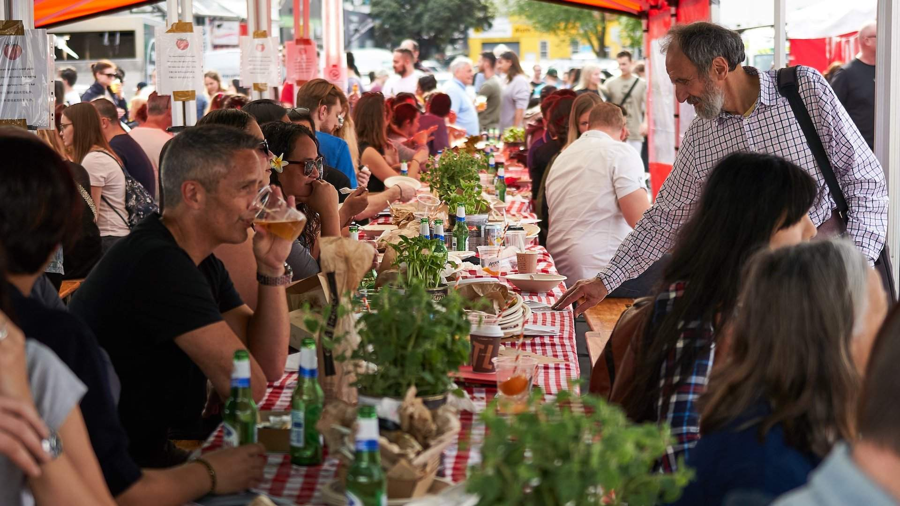
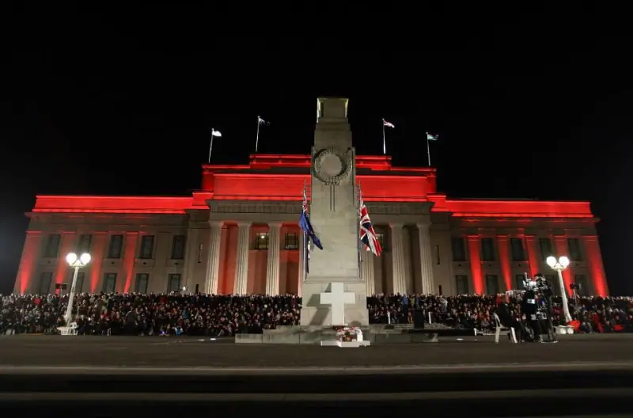
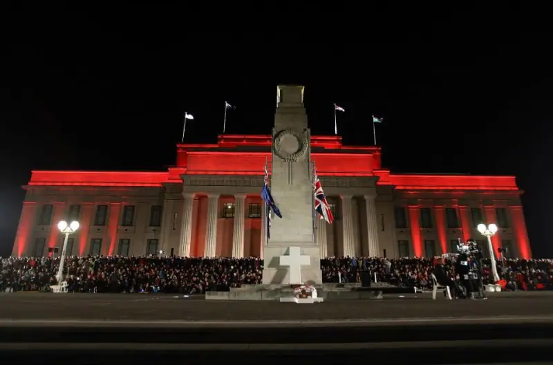

New Zealand European culture, deeply intertwined with its Italian heritage, reflects a rich tapestry of traditions, art, and cuisine. Rooted in the early European settlers' influences, this culture celebrates community, family values, and a profound connection to the land. Italian contributions are especially notable, with vibrant culinary traditions showcasing beloved dishes like pasta, pizza, and gelato, which have become staples in New Zealand cuisine.
Festivals and gatherings often feature music, dance, and art that highlight this blend of cultures, fostering a spirit of togetherness and appreciation for diversity. As a result, New Zealand European culture is not just a reflection of its historical roots but also an evolving celebration of its multicultural identity.
 

 
